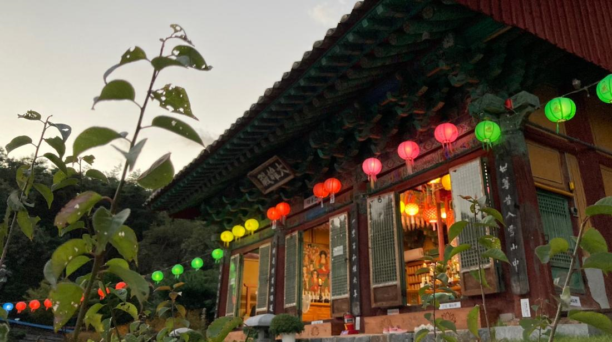
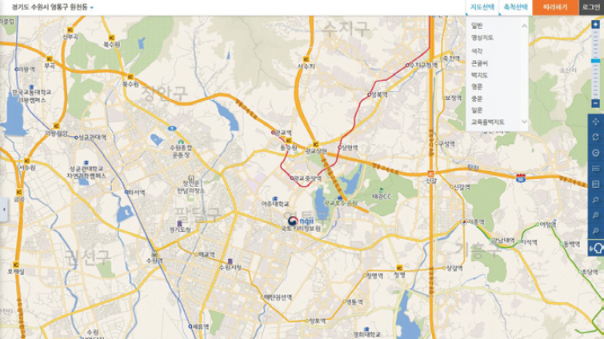

소중한 나, 연꽃 미소
파도소리 풍경소리로 내 마음을 찾아 주는 곳.신흥사는 완도의 전망을 한눈에 바라볼 수 있는 좋은 위치인 남망산 중턱에 자리하고 있습니다.완도 전망과 함께하는 야경은 더욱 아름다운 모습을 보여 주는 곳이기도 합니다.맑은 날이면 신지나 대둔산 경치도 볼 수 있고, 완도읍에서 차를 이용하지 않아도 닿을 수 있는 지리적 위치로서(완도군청에서 800m) 신흥사는 우리나라에서 몇 안 될 정도로 손꼽히는 도심과 바다를 한눈에 볼 수 있는 곳이기도 합니다.신흥사의 창건 역사는 100년이 되지 않지만 그 원류는 신라 장보고 시대까지 거슬러 올라갑니다. 독실한 불자였던 장보고대사는 청해진에 머물 당시 법화사를 창건하고 완도 지역을 불교의 중심으로 우뚝 세우며 불교문화를 꽃피웠습니다. 이때의 영향으로 지금 완도의 대부분이 중도리, 정도리, 불목리 등 불교
오시는 길
충청북도 단양군 영춘면 구인사길 73

프로그램
체험형
더보기
체험형
더보기
체험형
더보기